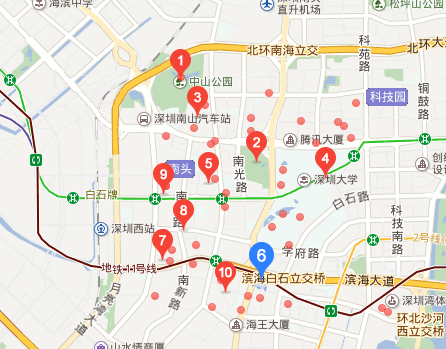

LIKER U出游
为您提供省钱，省力，好玩的出游方案
我们帮你挑选最近的好玩景点
我们根据您提供的位置，实时搜索最近的旅游景点
我们给你提供最实惠的住宿建议
我们将根据您提供的住宿要求，价格，

"这是一个为学生出游而定制的网站"
LIKE U 首席执行官这样说
"功能强大，操作简单易懂，我们很看好这个软件"
 一名学生这样评价
一名学生这样评价
我们创业的目的
当代大学生群体存在一个现象，各班级凝聚力不强，班级概念严重弱化，该现象严重地影响了学校对于各单位学生的行政管理并会对该学校的学风建设造成阻碍， 与此同时年轻一代的社会群体普遍有着强烈的团队拓展需求。以大学生为例，班级出游和社团出游在大学校园内十分风靡，已有成为各学生团体组织的正式展开工作的必要环节之趋势。很多学生团体在招新或成立之初都有组织出游的强烈诉求，希望借着刚认识的热度尽快地进一步熟悉周围的新成员。
详细我是可爱的分割线
我们LIKER U的优势
我们创新式地采取了“MENU”模式的操作界面，不用像传统的旅游公司靠用户和公司口头联系，这在市面上仅我们一家，因而我们的线上用户操作体验会非常好。我们会侧重于在活动中表达该团体文化，可以从团体提供的其团队文化相关的logo、标语、共同爱好和相关介绍，从而定制出具有该团体文化色彩团体出游。
详细